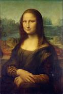

El retrato de Lisa Gherardini, esposa de Francesco del Giocondo,1 más conocido como La Gioconda (La Joconde en francés) o Monna Lisa, es una obra pictórica del polímata renacentista italiano Leonardo da Vinci. Fue adquirida por el rey Francisco I de Francia a comienzos del siglo xvi y desde entonces es propiedad del Estado francés. Se halla expuesta en el Museo del Louvre de París, siendo, sin duda, la «joya» de sus colecciones.
Su nombre, La Gioconda (la Alegre, en castellano), deriva de la tesis más aceptada acerca de la identidad de la modelo: la esposa de Francesco Bartolomeo de Giocondo, que realmente se llamaba Lisa Gherardini, de donde viene su otro nombre: Monna (señora, en el italiano antiguo) Lisa. El Museo del Louvre acepta el título completo indicado al principio como el título original de la obra, aunque no reconoce la identidad de la modelo y tan solo la acepta como una hipótesis.2
Es un óleo sobre tabla de álamo de 79 × 53 cm, pintado entre 1503 y 1519,3 y retocado varias veces por el autor. Se considera el ejemplo más logrado de sfumato, técnica muy característica de Leonardo, si bien actualmente su colorido original es menos perceptible por el oscurecimiento de los barnices. El cuadro está protegido por múltiples sistemas de seguridad y ambientado a temperatura estable para su preservación óptima.4 Es revisado constantemente para verificar y prevenir su deterioro.
Por medio de estudios históricos se ha determinado que la modelo podría ser una vecina de Leonardo, que podrían conocerse sus descendientes y que la modelo podría haber estado embarazada, por la forma de esconder que tienen sus manos. Pese a todas las suposiciones, las respuestas en firme a los varios interrogantes en torno a la obra de arte resultan francamente insuficientes, lo cual genera más curiosidad entre los admiradores del cuadro.
La fama de esta pintura no se basa únicamente en la técnica empleada o en su belleza, sino también en los misterios que la rodean. Además, el robo que sufrió en 1911, las reproducciones realizadas, las múltiples obras de arte que se han inspirado en el cuadro y las parodias existentes contribuyen a convertir a La Gioconda en el cuadro más famoso del mundo, visitado por millones de personas anualmente.5
La Gioconda ha sido considerada como el cuadro más famoso del mundo.10 Su fama se debe probablemente a las múltiples referencias literarias, a las diversas hipótesis sobre la identidad de la protagonista y al espectacular robo del que fue objeto el 21 de agosto de 1911.
Es además la última gran obra de Da Vinci. Después de terminar el cuadro, Leonardo llevó su obra a Roma y luego a Francia, donde la conservó hasta su fallecimiento en su residencia del castillo de Clos-Lucé.1112 Se sabe que pasó a manos del rey francés Francisco I, quien la habría comprado por un importe de 12 000 francos (4000 escudos de oro),10 aunque no está claro si fue en 1517, antes de la muerte del artista, o con posterioridad a su fallecimiento en 1519.13
Tras la muerte del rey, la obra pasó a Fontainebleau, luego a París y más tarde al palacio de Versalles. Con la Revolución francesa llegó al Museo del Louvre, lugar donde se trasladó en 1797. En 1800, el entonces primer cónsul Napoleón Bonaparte, ordenó sacar el cuadro del museo y colocarlo en su dormitorio del palacio de las Tullerías hasta que lo devolvió al museo en 1804.14 Allí se alojó definitivamente, salvo un breve paréntesis durante la Segunda Guerra Mundial, cuando el cuadro fue custodiado en el castillo de Amboise y posteriormente en la abadía de Loc-Dieu.15
Hasta 2005 se ubicó en la Sala Rosa del Louvre, y desde entonces se encuentra en el Salón de los Estados.16 Es pertinente decir que la mayoría de datos acerca del cuadro se conocen gracias al trabajo biográfico del pintor Giorgio Vasari, contemporáneo de Leonardo.17
Leonardo dibujó el esbozo del cuadro y después aplicó el óleo diluido en aceite esencial. La técnica empleada, conocida con el término italiano de sfumato, consiste en prescindir de los contornos netos y precisos típicos del quattrocento y envolverlo todo en una especie de niebla que difumina los perfiles y produce una impresión de inmersión total en la atmósfera, lo que da a la figura una sensación tridimensional.1819
El cuadro se pintó sobre una tabla de madera de álamo recubierta por varias capas de enlucido.20 Se conserva en una urna de cristal de 40 mm de espesor a prueba de balas,16 tratada de manera especial para evitar los reflejos.16 La cámara que alberga el cuadro está diseñada para mantener una temperatura constante de 20 °C y 50 % de humedad relativa, con lo que se busca garantizar las condiciones óptimas para la estabilidad de la pintura.1621
La pintura tiene una grieta vertical de 12 centímetros en la mitad superior, tal vez debida a la eliminación del marco original, si bien un estudio actual con rayos infrarrojos revela que la grieta puede ser tan antigua como la misma tabla.22 Dicha grieta fue reparada entre mediados del siglo xviii y principios del XIX mediante dos piezas metálicas en forma de mariposa fijadas por el reverso.23 De ellas, una se soltó posteriormente. En la actualidad, se ha determinado que la fisura es estable y no ha empeorado con el tiempo.23
Sin embargo, para descartar cualquier peligro, en 2004 se constituyó un equipo de curadores franceses, que vigilan permanentemente el estado de la pintura, previniendo cualquier alteración provocada por el tiempo
La galería se abre a un paisaje tal vez inspirado en las vistas que Leonardo pudo divisar en los Alpes, durante su viaje a Milán, aunque una última investigación reveló que el fondo podría corresponder a la ciudad de Bobbio, en la región de Emilia-Romaña.272829 Anteriormente, se pensaba que el paisaje, que posee una atmósfera húmeda y que parece rodear a la modelo, estaba en Arno o en una porción del lago de Como,28 sin haber llegado a conclusiones definitivas.
Se ha intentado muchas veces compaginar las dos mitades del paisaje que aparece tras la modelo, pero la discordancia entre ambos lados es tan grande que no permite diseñar una imagen continuada.30 El lado izquierdo parece estar más bajo que el derecho, entrando en conflicto con la física, puesto que el agua no puede permanecer quieta si existe desnivel en el terreno.31 A este respecto el historiador de arte E.H. Gombrich escribe:30
En consecuencia, cuando centramos nuestras miradas sobre el lado izquierdo del cuadro, la mujer parece más alta o más erguida que si nos centramos en la derecha. Y su rostro, asimismo, parece modificarse con este cambio de posición, porque tampoco en este caso las dos partes se corresponden con exactitud.
E. H. Gombrich
En medio del paisaje aparece un puente, conocido en Bobbio como puente Gobbo o el puente Vecchio, y que muestra un elemento de civilización que podría estar señalando la importancia de la ingeniería y la arquitectura.26 La ubicación geográfica del puente fue posible gracias a un códice que dejó Leonardo da Vinci, en el que se muestra la escena en la que se pintó. Una crecida, ocurrida años más tarde en el río Trebbia, destruyó el puente, que posteriormente fue reconstruido.32
La modelo carece de cejas y pestañas, posiblemente por una restauración demasiado agresiva en siglos pasados, en la cual se habrían eliminado las veladuras o leves trazos con que se pintaron. Vasari, en efecto, sí habla de cejas: «En las cejas se apreciaba el modo en que los pelos surgen de la carne, más o menos abundantes y girados según los poros de la piel; no podían ser más reales».33 Según otros expertos, las cejas depiladas eran habituales en las damas de alcurnia florentinas;34 o Leonardo evitó pintar las cejas y las pestañas para dejar su expresión más ambigua, o tal vez porque nunca llegó a terminar la obra.
La conservación de la obra es mediana, con un craquelado bastante evidente en toda la superficie y una fisura bastante importante que, desde el borde superior, desciende en vertical sobre la cabeza del personaje. Esta grieta se mantiene estable y no es previsible que empeore, gracias a que la obra se conserva en un espacio climatizado. La deficiencia de conservación más criticada es la suciedad que enmascara los colores; la pintura está tapada por capas de barniz que han amarilleado con el tiempo, efecto habitual en las sustancias de origen natural. En siglos pasados, cuando no existían los disolventes, la opacidad de las pinturas antiguas se paliaba o disimulaba aplicando nuevas capas de barniz. El cuadro de Leonardo acumula varias, y los responsables del Louvre se resisten a eliminarlas por miedo a alterar el aspecto de la obra. La hipótesis de una próxima restauración de La Gioconda se ve ahora todavía más remota, tras una polémica suscitada en 2011 por la limpieza de otra obra del artista en el Louvre, La Virgen, el Niño Jesús y Santa Ana, una intervención considerada abusiva por algunos expertos y que provocó la dimisión de dos técnicos contrarios a ella.37
Mediante un programa informático se ha recreado el colorido que debería tener la obra si se eliminasen las capas de suciedad. La restauración en 2011-2012 de la copia conservada en el Museo del Prado (Madrid), pintada simultáneamente en el taller del maestro, puede ayudar a imaginar el aspecto que originalmente tuvo la obra del Louvre.